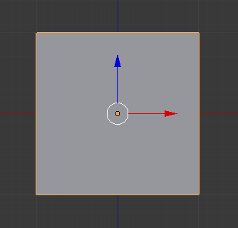
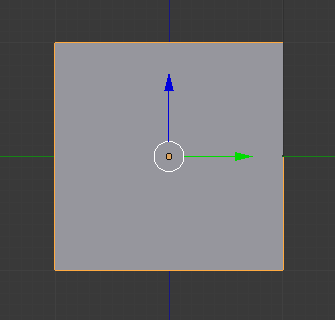
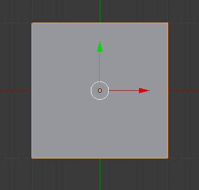
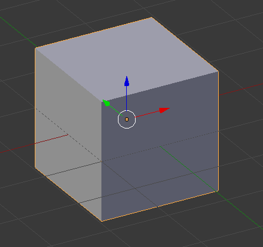
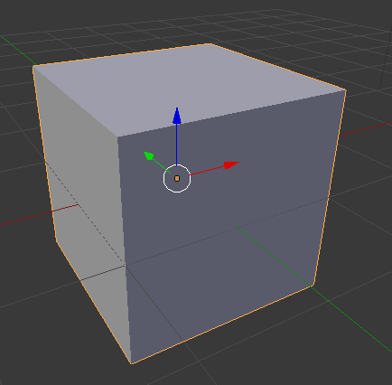

Navigate the 3D View¶
Rotate/pan/zoom with mouse¶
| Action | Description |
|---|---|
MMB |
Rotate the view |
Shift-MMB |
Pan the view |
Ctrl-MMB/Wheel |
Zoom the view |
{kind=link}
Use NumPad to snap to views¶
Note
Laptop doesn’t have a NumPad? Go to File ‣ User Preferences ‣ Input tab and check the Emulate Numpad box. This will make the top number keys behave like the NumPad.
| Action | Description |
|---|---|
Numpad7 |
Snap to top view |
Numpad1 |
Snap to view from the front |
Numpad3 |
Snap to view from the right |
Numpad5 |
Swap between orthographic and perspective views |
Numpad9 |
Swap (switches between top/bottom or left/right) |
Exercise
- Play around with the view – use
MMBto randomly rotate the view, then use the NumPad keys to snap to views. - Note the top left corner (view label) and bottom left corner (axes) as you do so.

{kind=link}
Front view (X and Z axes visible)

{kind=link}
Right view (Y and Z axes visible)

{kind=link}
Top view (X and Y axes visible)

{kind=link}
Orthographic view (parallel lines on screen are also parallel on object; units have same number of pixels everywhere on screen). Better for precision modeling.

{kind=link}
Perspective view (more realistic view in some cases). Better for rendering or getting a feel for the model.
See also
The Blender documentation on the 3D view has more details.